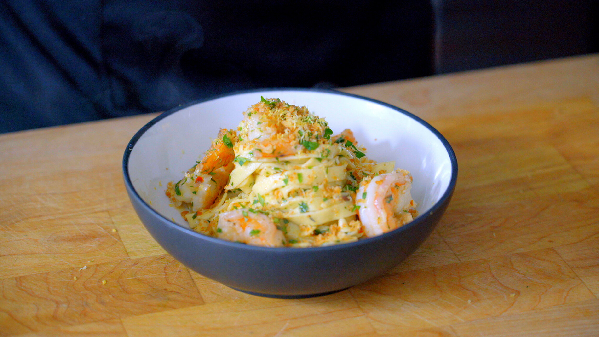

Shrimp Scampi Pasta

Ingredients
Simple Recipe Ingredients
- 2 tsp kosher salt
- 1/2 lb linguine pasta
- 3 Tbsp unsalted butter
- 2 Tbsp olive oil
- 3 garlic cloves, crushed
- 1/4 tsp crushed red pepper flakes
- 1/2 cup dry white whine
- 1 lb frozen shrimp, defrosted and peeled
- 1 tsp freshly ground black pepper
- Juice of 1 large lemon
- 2 Tbsp parsley, chopped
Complex Recipe Ingredients
- 1 tsp + 1 Tbsp kosher salt
- 1 tsp baking soda
- 1 lb fresh shrimp, peeled (shells reserved) and deveined
- 1 cup dry white wine
- 1 bay leaf
- 1/2 tsp black peppercorns
- 1/2 panko bread crumbs
- 8 Tbsp butter, divided
- 1/2 lb fresh fettuccine pasta
- 3 Tbsp olive oil
- 6-8 garlic cloves, thinly sliced
- 1/2 tsp crushed red pepper flakes
- 1 large shallot, minced
- To taste freshly ground black pepper
- Juice of 2 lemons
- 2 tsp fresh tarragon, chopped
- 1 Tbsp fresh marjoram, chopped
- 3 Tbsp parsley, chopped
- Zest of 1 lemon
Steps
Simple Recipe Steps
- Fill a large pot ⅔ the way full with water and add 2 teaspoons of salt. Bring to a boil.
- Meanwhile, heat the butter and olive oil over medium-high heat in a large skillet.
- Once the butter is fully melted, add the crushed garlic and red pepper flakes. Cook until fragrant, about 30 seconds.
- Add the pasta to the boiling water and cook until al dente according to the instructions on the box.
- Add the wine to the skillet and cook until reduced by half, about 3-5 minutes.
- Add the shrimp and cook on each side for about 45 seconds to 1 minute.
- Add the lemon juice and stir to incorporate.
- Drain the pasta, but reserve ¼ cup of the water.
- Add the pasta to the skillet and stir to combine. If the sauce looks separated, add the reserved pasta water.
- Season to taste and garnish with parsley.
Complex Recipe Steps
- In a medium bowl, combine 1 teaspoon salt and baking soda. Add the shrimp and toss to combine. Allow the shrimp to dry brine for 20-40 minutes at room temperature.
- In a small saucepot, add the wine, bay leaf, peppercorns, and reserved shrimp shells. Bring the wine to a simmer and continue cooking for 5-10 minutes or until the wine is reduced by half in volume. Then, turn off the heat, strain, and reserve until ready to use.
- Fill a large pot ⅔ the way full with water and add 2 teaspoons of salt. Bring to a boil.
- Meanwhile, add 2 tablespoons of butter to a medium skillet. Heat over medium heat and once melted, add the breadcrumbs. Cook until the breadcrumbs are toasted, about 4-6 minutes. Reserve until ready to use.
- In a large skillet, add the olive oil. Heat over medium-high heat until the oil is shimmering.
- Add the shrimp one at a time and cook for 30 seconds on each side, then transfer the shrimp to a separate plate. At this point, the shrimp will only be par-cooked.
- Add the garlic, red pepper flakes, and shallots to the same large skillet. Cook on medium-high heat for 1 minute.
- Add the reserved infused wine, reduce the heat to medium, and continue cooking for an additional 3 minutes.
- Meanwhile, begin cooking the fresh pasta according to the package directions.
- Add the remaining 6 tablespoons of butter to the skillet. Allow the butter to melt fully, then add the lemon juice. Stir to combine the sauce.
- Add the shrimp back to the skillet to finish cooking.
- Taste the sauce for seasoning, then add salt and pepper to taste.
- Add the cooked pasta to the skillet directly from the pot, reserving all of the pasta water.
- Using tongs, stir the pasta into the sauce. Add ¼ cup of pasta water, then stir the pasta until the sauce becomes thick, glossy, and homogenous. If the sauce becomes too thick or separates, add another ¼ cup of pasta water.
- Finish the pasta with toasted breadcrumbs, fresh herbs, and lemon zest.